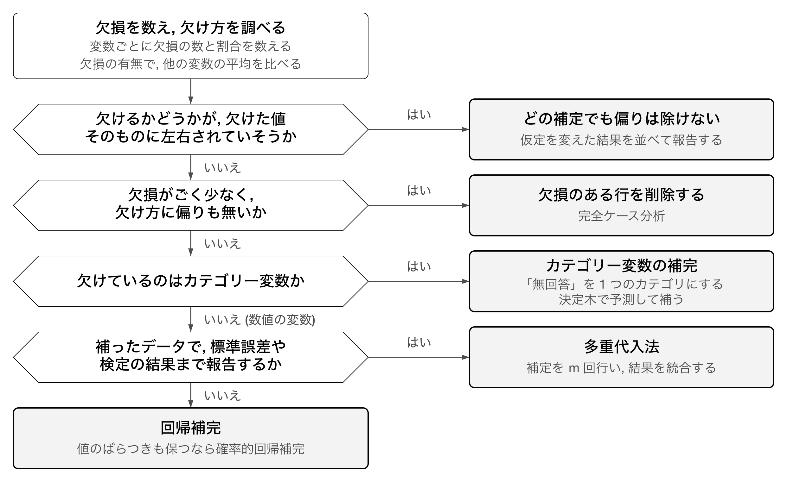
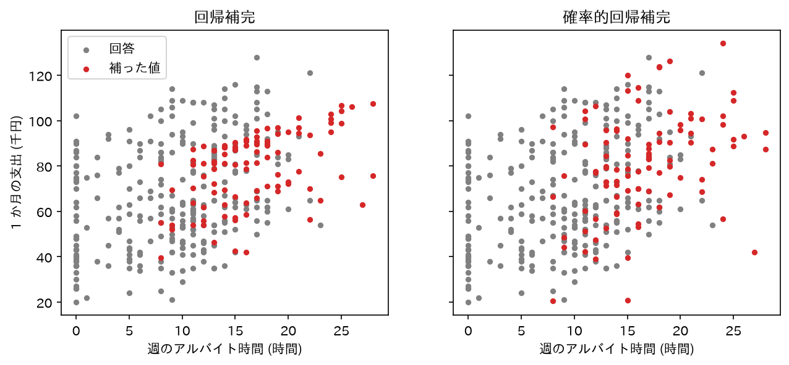
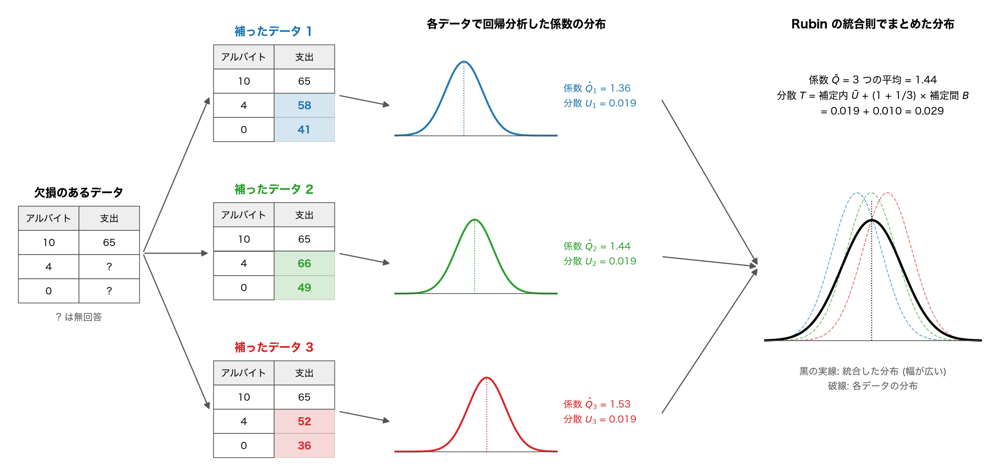

データサイエンス実践 Ch15 欠損値補定 (選択)
資料
本章は, データの一部が欠けているときの扱い方をまとめる章です. 最初の欠損値と補定で 2 つの言葉の意味を確かめ, 次の補定方法の選び方で手元のデータに合う方法を決めてから, 必要な節へ進んでください.
前提となる章
- 第4章: 平均や中央値などの基本統計量と中心を表す基本統計量, 変数どうしの関係を表す相関. 補定に使う値の計算と, 補定が相関に与える影響の確認に使います.
- 第5章: 重回帰分析と回帰の評価. 回帰による補定と, 補定後の分析結果の比較に使います. すでに単回帰分析のデータの準備で, データの無い国を
dropnaで除外しています. 本章はこの処理を一般化します. - 第6章: 決定木分析による分類と, 訓練データとテストデータの分け方. カテゴリー変数の補定と, 補定をどの段階で行うかの判断に使います.
- 第14章: 質問紙調査では無回答が欠損の主な原因になります.
本章では次のライブラリを使います. uv add しておいてください (scikit-learn は, import するときには sklearn と書きます).
uv add pandas matplotlib matplotlib-fontja scikit-learn statsmodels欠損値補定
欠損値と補定
データの中で, 本来は値があるはずなのに記録されていない箇所を欠損値 (missing value) といいます. 調査の質問に答えてもらえなかった, 測定機器が故障して記録できなかった, といった理由で生じます. 次の表では, 学生 C の支出が無回答のため欠損値になっています.
| 学生 | 週のアルバイト時間 | 1 か月の支出 (千円) |
|---|---|---|
| A | 5 | 50 |
| B | 10 | 60 |
| C | 15 | (無回答) |
欠損値があると, そのままでは計算できない分析があります. 支出の平均は C の値が無いと 3 人分では求められず, 回帰分析は欠損値のある行を使えません. 欠損値のある行を除けば計算はできますが, データが減り, 除いた行が特定の学生に偏っていれば結果も偏ります.
欠けた値を, 他の情報から推測した値で埋めることを欠損値補定 (imputation, 本章では単に補定とも書きます) といいます. 上の表の C の支出なら, 次のような埋め方があります.
- 回答した A と B の支出の平均 55 千円で埋める.
- アルバイトが 5 時間長いと支出が 10 千円多いという A と B の関係から, 70 千円と推測して埋める.
どちらの値も推測であり, C の本当の支出ではありません. 埋め方によって補った値が変わり, 補ったデータで求める平均や回帰係数も変わります. そのため埋め方は, データの欠け方と分析の目的に合わせて選びます.
補定方法の選び方
補定の方法は, 欠損がどれだけあるか, どのように欠けているか, 補ったデータを何に使うかで決まります. 次の図を上からたどって方法を選んでください. 最初に欠損を数え, 欠け方を調べます. そのあと 4 つの問いに順に答え, 「はい」なら右の方法へ, 「いいえ」なら下の問いへ進みます.

図の各箱は, 次の節で説明します.
- 欠損を数え, 欠け方を調べる: 欠損値を見つけて数える, 欠損の種類
- どの補定でも偏りは除けない: 欠損の種類
- 欠損のある行を削除する: 欠損のある行を削除する方法
- カテゴリー変数の補完: カテゴリー変数の補完
- 多重代入法: 複数回補って結果を統合する方法 (多重代入法)
- 回帰補完, 確率的回帰補完: 回帰補完と確率的回帰補完
最初の箱の確認は, どの方法を使う場合にも行います. 欠け方の見当が付かないまま方法を選ぶと, 補った結果が偏っているかを判断できないためです. 1 つ目の問い (欠けるかどうかが欠けた値そのものに左右されるか) は, 欠けた値を見ないと確かめられないので, 調査の内容から判断します. この場合は観測された変数から欠けた値を予測しても偏りを除けないので, 最初に問います.
カテゴリー変数と数値の変数の両方が欠けているときは, 変数ごとに 3 つ目の問いから進みます. 図に無い平均値補完や, 時刻順に並んだデータの補完は, その他の手法にまとめています.
「欠損がごく少ない」の目安として 5% 程度以下が挙げられることがありますが, 根拠のある境界ではありません. 割合が小さくても, 欠けた行が特定の集団に偏っていれば, 削除で結果が偏ります.
どの方法で補った場合も, 補った値は実際に観測した値ではありません. 報告では, どの変数をどの方法で補ったかと, 補った値の数を書きます. 補ったデータと補う前のデータで結果が大きく変わるときは, その違いも書きます.
例題のデータ: 学生生活調査
こちらのデータは, ある大学で学生 400 人に行った生活調査の回答です (練習用に作成した架空のデータです). 質問紙調査 (第14章) では, 答えたくない質問や答えにくい質問が無回答になり, それがデータの欠損になります.
| 列 | 内容 |
|---|---|
student_id |
学生番号 |
grade |
学年 (1 から 4) |
housing |
居住形態 (自宅, 一人暮らし, 寮) |
commute_min |
通学時間 (分) |
work_hours |
週のアルバイト時間 (時間) |
spending |
1 か月の支出 (千円) |
sleep_hours |
平均の睡眠時間 (時間) |
架空のデータなので, 無回答だった項目の本当の値も分かっています. こちらの答え合わせ用のデータには, 全員の本当の値が入っています. 実際の調査では本当の値は分かりません. 本章では, 補った値がどれだけ本当の値に近いかを確かめるためにだけ使います.
2 つのファイルを data/student_survey.csv と data/student_survey_true.csv として保存します.
import pandas as pd
df = pd.read_csv('data/student_survey.csv', encoding='utf-8-sig')
true = pd.read_csv('data/student_survey_true.csv', encoding='utf-8-sig') # 答え合わせ用
print(df.head())
"""
student_id grade housing commute_min work_hours spending sleep_hours
0 1 4 一人暮らし 17 15.0 99.0 6.7
1 2 1 一人暮らし 7 11.0 90.0 6.8
2 3 4 自宅 39 10.0 47.0 5.5
3 4 4 NaN 50 14.0 NaN 7.0
4 5 3 NaN 32 9.0 48.0 6.3
"""欠損値を見つけて数える
pandas は, CSV の空欄を NaN (Not a Number) として読み込みます. 上の出力の 4 行目 (学生番号 4) は, 居住形態と支出が空欄だったので NaN になっています. work_hours と spending が 15.0 のように小数で表示されるのは, NaN が小数の型の値なので, NaN を含む列全体が小数の型になるためです.
欠損は空欄で表されるとは限りません. 調査票の集計によっては, 999 や -1 のような, 実際にはありえない値を欠損の印として入れていることがあります. この場合は, 読み込むときに pd.read_csv('...', na_values=[999, -1]) と指定するか, 読み込んだ後に df.replace(999, np.nan) で NaN に置き換えてから数えます. 置き換えずに平均を求めると, 999 がそのまま平均に入ります.
変数ごとの欠損の数は isna().sum() で, 割合は isna().mean() で求めます. isna() は欠損なら True, そうでなければ False を返し, True は 1, False は 0 として足し合わされます.
print(df.isna().sum())
print(df.isna().mean().round(3))
print('欠損の無い行:', len(df.dropna()))
"""
student_id 0
grade 0
housing 40
commute_min 0
work_hours 28
spending 97
sleep_hours 0
dtype: int64
student_id 0.000
grade 0.000
housing 0.100
commute_min 0.000
work_hours 0.070
spending 0.242
sleep_hours 0.000
dtype: float64
欠損の無い行: 249
"""支出が 24.2%, 居住形態が 10.0%, アルバイト時間が 7.0% 欠けています. 欠けている変数が 3 つあるので, どれか 1 つでも欠けている行を除くと, 400 行のうち 249 行しか残りません.
欠損が生じる原因には, 無回答のほかに, 測定の失敗 (機器の故障, 記録漏れ), 調査の対象外 (一人暮らしでない学生に家賃を聞かない), データの結合時の不一致 (第5章で国名の表記が合わずに結合できなかった国) があります. 調査の対象外による欠損は, 補うべき値がそもそも存在しないので, 補定の対象にしません.
この節に対応する演習は, 章末のExercise DSP15-1です.
欠損の種類: MCAR, MAR, MNAR
欠損は, 値が欠けるかどうかが何に左右されるかで 3 種類に分けられます.
- MCAR (Missing Completely At Random, 完全にランダムな欠損): 値が欠けるかどうかが, どの変数の値にも左右されない. 例: 回収した調査票の一部を, 集計の途中で無作為に紛失した.
- MAR (Missing At Random, ランダムな欠損): 値が欠けるかどうかが, 観測された他の変数の値だけに左右される. 例: アルバイトの時間が長い学生ほど, 支出の質問を飛ばしやすい (アルバイトの時間は答えている).
- MNAR (Missing Not At Random, ランダムでない欠損): 値が欠けるかどうかが, 欠けた値そのものに左右される. 例: 支出が多い学生ほど, 支出の質問に答えたがらない.
欠損の種類によって, 以降の節の方法で補った結果に偏りが出るかどうかが変わります.
| 欠損の種類 | 欠損のある行の削除 | 他の変数を使う補定 (回帰補完, 多重代入法) |
|---|---|---|
| MCAR | 偏らない (行が減る分, 推定の精度は下がる) | 偏らない |
| MAR | 偏ることがある | 欠け方に関係する変数を補定に使えば, 平均や回帰係数の偏りを除ける (標準誤差を正しく求めるには多重代入法が要る) |
| MNAR | 偏る | 偏る |
MAR のときに補定で偏りを除けるのは, 補定が観測された変数から欠けた値を予測するからです. 欠け方を左右している変数 (MAR の例ではアルバイト時間) を予測に使えば, 欠けた行の特徴を補定に反映できます. MNAR では, 欠け方を左右しているのが欠けた値そのものなので, 観測された変数からの予測ではその偏りを捉えられません.
欠損の種類は, 欠けた値を見ずには確定できません. MAR と MNAR を区別するには, 欠けた値そのものと欠け方の関係を調べる必要があるからです. ただし, 欠損の有無で他の変数の値を比べると, 手がかりが得られます. 支出を答えたかどうかで, 他の変数の平均を比べます.
# 支出を答えたかどうかで, 他の変数の平均を比べる
answered = df['spending'].isna().map({False: '回答あり', True: '無回答'})
columns = ['grade', 'commute_min', 'work_hours', 'sleep_hours']
print(df.groupby(answered)[columns].mean().round(2))
"""
grade commute_min work_hours sleep_hours
spending
回答あり 2.23 40.08 9.34 6.59
無回答 2.64 37.46 16.67 6.11
"""支出が無回答の学生は, 週のアルバイト時間の平均が 16.67 時間で, 回答した学生の 9.34 時間より 7 時間ほど長くなっています. 支出の欠け方はアルバイト時間と関係しているので, MCAR ではありません. アルバイト時間で欠け方が説明できるなら MAR です. 同じアルバイト時間の学生の中で, 支出が多い学生ほど答えていないなら MNAR ですが, それは欠けた支出を見ないと確かめられません.
居住形態の欠け方も, 学年ごとに比べます.
# 学年ごとの, 居住形態が無回答の割合
print(df['housing'].isna().groupby(df['grade']).mean().round(3))
"""
grade
1 0.054
2 0.084
3 0.103
4 0.192
Name: housing, dtype: float64
"""学年が上がるほど居住形態の無回答が増え, 4 年生では 19.2% です. 居住形態の欠け方は学年と関係しています.
実際の分析では, MNAR かどうかを調査の内容から考えます. 収入, 支出, 健康状態のように, 値そのものが答えにくさにつながる質問は MNAR を疑います. MNAR が疑われるときは, 補った値を少し大きく (または小さく) ずらした場合にも結論が変わらないかを確かめ, その結果を並べて報告します.
- 感度分析と δ 調整
MNAR かどうかは, 検定では判定できません. χ二乗検定や t 検定で欠損の有無と他の変数の関係を調べると, 欠け方が他の変数と関係していること (MCAR でないこと) は示せます. しかし MAR と MNAR の違いは, 欠けた値そのものと欠け方の関係にあります. 欠けた値は観測されていないので, この関係はどの検定にもかけられません.
そのため MNAR が疑われるときは, 欠け方の仮定を変えると結論がどれだけ変わるかを調べます. このような分析を感度分析 (sensitivity analysis) といいます. 補った値を一定の量 δ だけずらして分析をやり直す方法は, δ 調整 (delta adjustment) と呼ばれます. δ を少しずつ大きくして結論が変わる δ を探し, その大きさのずれが現実にありうるかを調査の内容から判断します. 感度分析の詳しい手順は, 本章では扱いません.
この節に対応する演習は, 章末のExercise DSP15-1です.
欠損のある行を削除する方法
分析に使う変数のどれかが欠けている行をすべて除き, 全部が揃った行だけで分析する方法を完全ケース分析 (リストワイズ削除) といいます. dropna() で行えます. 次のコードは 7 列すべてを分析に使う場合で, どれか 1 つでも欠けた行を除きます.
complete = df.dropna()
print(len(df), '行から', len(complete), '行へ')
print('支出の平均 (支出を答えた全員):', round(df['spending'].mean(), 2))
print('支出の平均 (完全ケース):', round(complete['spending'].mean(), 2))
"""
400 行から 249 行へ
支出の平均 (支出を答えた全員): 69.0
支出の平均 (完全ケース): 66.71
"""答え合わせ用のデータで求めた本当の支出の平均は 71.69 千円です. 支出を答えた学生だけの平均 (69.0) も, 完全ケースの平均 (66.71) も, 本当の値より小さくなっています. アルバイト時間が長く支出も多い学生ほど支出を答えていないので, 答えた学生だけで平均すると, 支出の少ない学生に偏ります. 完全ケースでは, 支出の多い学生ほどアルバイト時間も答えていない分の偏りが加わります.
削除には次の 2 つの問題があります.
- サンプルサイズが減ります. この例では 151 行 (38%) を捨てており, 推定の精度が下がります.
- 欠損が MCAR でないとき, 残った行が元の集団を代表しなくなり, 推定が偏ります.
分析に使う変数の組ごとに, その組の両方が揃った行だけを使う方法をペアワイズ削除といいます. pandas の corr() は, 変数の組ごとに両方が揃った行で相関係数を求めるので, ペアワイズ削除になっています. 組ごとに使う行が違うため, 相関係数どうしを比べるときに, 対象の学生が揃っていないことに注意が要ります.
欠損の割合が大きい変数 (例えば半分以上が欠けている変数) は, 補っても補った値の割合が大きくなるので, 分析から除くことも検討します.
1 つの値で補う方法 (単一代入法)
欠けた値ごとに 1 つの値を決めて補う方法を単一代入法といいます. 補った後は欠損の無い 1 つのデータになるので, 以降の分析を通常どおり行えます. 一方, 補った値を観測した値と同じ確かさで扱うので, 分析結果の標準誤差は実際より小さく出ます. この問題は多重代入法で扱います.
カテゴリー変数の補完
居住形態 (自宅, 一人暮らし, 寮) が 40 人分欠けています. カテゴリー変数の補い方を 3 つ比べます.
最頻値補完: 最も多いカテゴリで補います. 平均を求められないカテゴリー変数での, 最も簡単な方法です.
print(df['housing'].value_counts(dropna=False))
mode = df['housing'].mode()[0]
housing_mode = df['housing'].fillna(mode)
print('最頻値:', mode)
print(housing_mode.value_counts(normalize=True).round(3))
print(true['housing'].value_counts(normalize=True).round(3)) # 本当の値
"""
housing
自宅 191
一人暮らし 120
寮 49
NaN 40
Name: count, dtype: int64
最頻値: 自宅
housing
自宅 0.578
一人暮らし 0.300
寮 0.122
Name: proportion, dtype: float64
housing
自宅 0.528
一人暮らし 0.340
寮 0.132
Name: proportion, dtype: float64
"""無回答の 40 人をすべて自宅としたので, 自宅の割合が 57.8% になり, 本当の 52.8% より 5 ポイント大きくなりました. 最頻値補完は, 欠損が多いほど最も多いカテゴリの割合を大きくします.
「無回答」を 1 つのカテゴリとして残す: 欠けた値を推測せず, 「無回答」という 4 つ目のカテゴリにします.
housing_unknown = df['housing'].fillna('無回答')
print(housing_unknown.value_counts())
"""
housing
自宅 191
一人暮らし 120
寮 49
無回答 40
Name: count, dtype: int64
"""この方法は値を推測しないので, 推測の誤りが入りません. 無回答であること自体に意味がある場合 (例えば, 無回答の学生は退学しやすい) には, 「無回答」のカテゴリが分析に役立ちます. 一方, 自宅, 一人暮らし, 寮の割合を知りたい場合には使えません.
分類モデルで予測して補う: 居住形態を答えた学生のデータで, 他の変数から居住形態を当てる分類モデルを学習します. 学習したモデルで, 無回答の学生の居住形態を予測して補います. ここでは第6章の決定木を使います. 予測に使う変数は, 欠損の無い通学時間, 学年, 睡眠時間にします. 自宅生は通学時間が長いので, 通学時間が居住形態の手がかりになります.
from sklearn.tree import DecisionTreeClassifier
features = ['commute_min', 'grade', 'sleep_hours'] # 欠損の無い変数
known = df['housing'].notna()
model = DecisionTreeClassifier(max_depth=3, random_state=0)
model.fit(df.loc[known, features], df.loc[known, 'housing'])
housing_model = df['housing'].copy()
housing_model[~known] = model.predict(df.loc[~known, features])
print(housing_model[~known].value_counts())
print(housing_model.value_counts(normalize=True).round(3))
"""
housing
自宅 21
一人暮らし 19
Name: count, dtype: int64
housing
自宅 0.530
一人暮らし 0.348
寮 0.122
Name: proportion, dtype: float64
"""無回答の 40 人は, 自宅 21 人, 一人暮らし 19 人と予測されました. 補った後の自宅の割合は 53.0% で, 本当の割合 (52.8%) に近くなっています. 一方, 寮と予測された学生はいません. 寮生も一人暮らしの学生も通学時間が短く, 予測に使った 3 つの変数では 2 つを区別できないためです. 分類モデルでの補完は, 予測に使える変数が補う変数と関係しているときに役立ちます. 関係する変数が無ければ, 予測はほぼ最頻値になり, 最頻値補完と同じ結果になります.
1 人ずつの予測がどれだけ当たっているかは, 答え合わせ用のデータで確かめられます. この節に対応する演習は, 章末のExercise DSP15-2です.
回帰補完と確率的回帰補完
数値の変数は, 他の変数から重回帰分析で予測して補えます. これを回帰補完といいます. 支出を, アルバイト時間と通学時間から予測して補います. 支出とアルバイト時間の両方を答えた学生のデータで回帰式を求め, 支出が無回答の学生に当てはめます. 通学時間には欠損が無いので, 除く行を決める dropna の subset には支出とアルバイト時間だけを指定します (このデータでは, 支出が無回答の学生は全員アルバイト時間を答えています).
from sklearn.linear_model import LinearRegression
features = ['work_hours', 'commute_min']
train = df.dropna(subset=['spending', 'work_hours']) # 両方を答えた行で学習する
target = df['spending'].isna() # 支出が無回答の行を補う
reg = LinearRegression()
reg.fit(train[features], train['spending'])
print('係数:', reg.coef_.round(3), '切片:', round(reg.intercept_, 3))
spending_reg = df['spending'].copy()
spending_reg[target] = reg.predict(df.loc[target, features])
print(spending_reg[target].head().round(1))
"""
係数: [ 1.384 -0.469] 切片: 73.495
3 69.4
12 86.8
15 42.1
18 57.7
19 63.7
Name: spending, dtype: float64
"""回帰式は「支出 = 73.495 + 1.384 × アルバイト時間 - 0.469 × 通学時間」です. アルバイトが週 1 時間長いと支出が 1.384 千円多く, 通学時間が 1 分長いと 0.469 千円少ないという関係です (通学時間の長い学生には自宅生が多く, 家賃や食費がかからないためです).
回帰補完で補った値は, すべて回帰式の上に乗ります. 実際の支出は, 同じアルバイト時間と通学時間の学生の間でもばらつきますが, 回帰補完の値にはそのばらつきがありません. そのため, 補った後のデータでは支出の標準偏差が小さくなり, 支出とアルバイト時間の相関が強めに出ます.
このばらつきを補うために, 予測値に残差と同じ大きさのばらつきを持つ乱数を足す方法を確率的回帰補完といいます. 残差の標準偏差を求め, 平均 0, その標準偏差の正規分布から乱数を作って足します (ddof=3 は, 推定した係数 2 つと切片 1 つの分だけ自由度を減らす指定です).
import numpy as np
residual_sd = np.std(train['spending'] - reg.predict(train[features]), ddof=3)
print('残差の標準偏差:', round(residual_sd, 2))
rng = np.random.default_rng(0)
spending_stoch = spending_reg.copy()
spending_stoch[target] += rng.normal(0, residual_sd, target.sum())
"""
残差の標準偏差: 17.31
"""2 つの補い方で補った値を, 回答と重ねて描きます.
import matplotlib.pyplot as plt
import matplotlib_fontja
fig, axes = plt.subplots(1, 2, figsize=(10, 4), sharey=True)
pairs = [(spending_reg, '回帰補完'), (spending_stoch, '確率的回帰補完')]
for ax, (s, title) in zip(axes, pairs):
ax.scatter(df.loc[~target, 'work_hours'], s[~target], s=12, c='gray', label='回答')
ax.scatter(df.loc[target, 'work_hours'], s[target], s=12, c='tab:red',
label='補った値')
ax.set_title(title)
ax.set_xlabel('週のアルバイト時間 (時間)')
axes[0].set_ylabel('1 か月の支出 (千円)')
axes[0].legend()
plt.show()
plt.close(fig)
左の回帰補完では, 補った値 (赤) が回答 (灰) より狭い範囲に集まっています. 同じアルバイト時間の回答は, 例えば 10 時間の学生で 29 千円から 109 千円まで散らばっていますが, 補った値はアルバイト時間と通学時間だけで決まるからです. 右の確率的回帰補完では, 補った値が回答と同じ程度に散らばっています.
補った後の支出の標準偏差と, アルバイト時間との相関を, 平均値補完 (支出の平均で補う方法) とも比べます. 「本当の値」の行は, 答え合わせ用のデータの支出で求めた値です.
spending_mean = df['spending'].fillna(df['spending'].mean())
candidates = {
'本当の値': true['spending'],
'回答のみ': df['spending'],
'平均値補完': spending_mean,
'回帰補完': spending_reg,
'確率的回帰補完': spending_stoch,
}
for name, s in candidates.items():
corr = s.corr(df['work_hours'])
print(f'{name:8s} 標準偏差 {s.std():6.2f} アルバイト時間との相関 {corr:.3f}')
"""
本当の値 標準偏差 24.78 アルバイト時間との相関 0.418
回答のみ 標準偏差 24.28 アルバイト時間との相関 0.353
平均値補完 標準偏差 21.12 アルバイト時間との相関 0.294
回帰補完 標準偏差 22.92 アルバイト時間との相関 0.431
確率的回帰補完 標準偏差 24.33 アルバイト時間との相関 0.426
"""- 平均値補完は, 97 人に同じ値を入れるので標準偏差が最も小さく (21.12), 相関も 0.294 まで弱まります. 補った 97 人は, アルバイト時間がいくらでも支出が同じになるからです.
- 回帰補完は, 相関 (0.431) が本当の値 (0.418) よりやや強く, 標準偏差 (22.92) は小さくなっています.
- 確率的回帰補完は, 標準偏差 (24.33) が本当の値 (24.78) に近づきます.
- 回答のみの相関 (0.353) が本当の値より弱いのは, アルバイト時間が長く支出も多い学生が抜けているからです.
確率的回帰補完は, 1 人ずつの値の当たり方では回帰補完より劣ります. 乱数を足した分だけ, 補った値が本当の値から離れるからです. 1 人ずつの値を当てたいなら回帰補完, 分布や変数間の関係を保ちたいなら確率的回帰補完を選びます.
この節に対応する演習は, 章末のExercise DSP15-3です.
その他の手法
ほかの単一代入法を, 使いどころと pandas, scikit-learn の関数名だけ挙げます.
- 平均値補完, 中央値補完: 変数の平均か中央値で補います.
df['x'].fillna(df['x'].mean()), scikit-learn ではSimpleImputer(strategy='mean')(中央値は'median'). 同じ値を多くの行に入れるので, 回帰補完と確率的回帰補完で確かめたとおり分散が小さくなり, 他の変数との相関が弱まります. 外れ値の多い変数には, 外れ値に引きずられない中央値を使います. - 直前の値による補完 (時系列): 時刻順に並んだデータで, 欠けた時点を直前の時点の値で補います.
df['x'].ffill(). 気温や株価のように, 隣り合う時点の値が近いデータに使います. - 線形補間 (時系列): 欠けた時点の前後の値を直線で結んで補います.
df['x'].interpolate(). 欠けた期間の値の変化を直線で近似できるときに使います. - k 近傍法による補完: 他の変数の値が近い k 人 (行) を探し, その k 人の値の平均で補います. scikit-learn の
KNNImputer(n_neighbors=5). 変数間の関係が直線で表せないときにも使えます. 変数の単位がそろっていないと, 値の幅が大きい変数だけで近さが決まってしまうので, 先に標準化します.
複数回補って結果を統合する方法 (多重代入法)
補った値の不確かさを推定に反映する
単一代入法で補った値は, 本当の値の推測にすぎません. それを観測した値と同じに扱って回帰分析をすると, 標準誤差が実際より小さく出て, 検定で差があると判定しやすくなります.
多重代入法 (multiple imputation) は, 確率的回帰補完のように乱数を含む補定を m 回行い, 補った値の違う m 個のデータセットを作ります. 各データセットで同じ分析を行い, m 個の結果のばらつきを, 補った値の不確かさとして標準誤差に加えます. 手順は次の 3 段です.
- 欠けた値を補ったデータセットを m 個作る.
- m 個のデータセットそれぞれで, 同じ分析 (回帰分析など) を行う.
- m 個の結果を, Rubin の統合則で 1 つにまとめる.
次の図は, m = 3 のときの 3 段の流れです. 無回答の支出に補う値はデータセットごとに違うので, 各データセットで推定したアルバイト時間の係数も少しずつずれます. 手順 3の Rubin の統合則は, 3 つの係数の平均を推定値とし, 各データセットでの分散 (補定内の分散) に係数のずれ (補定間の分散) を足して全体の分散とします. そのため, 統合した分布は各データセットの分布より幅が広くなります. 図の数値は説明のために作った例です.

手順 1 の補定には, 連鎖方程式による多重代入法 (MICE, Multivariate Imputation by Chained Equations) をよく使います. 欠けた変数が複数あるとき, 次の操作を繰り返します.
- 欠けた値をいったん平均などで埋める.
- 欠損のある変数を 1 つ選び, 他の変数から確率的回帰補完で補い直す.
- 次の変数を選び, 補い直した値も使って同じように補い直す. すべての変数を補い直したら 1 周.
- 補った値が安定するまで, 周を繰り返す.
支出を補うにはアルバイト時間が要り, アルバイト時間を補うには支出が要るという, 互いに欠けている変数を交互に補えます.
この節では, 支出をアルバイト時間と通学時間で説明する重回帰分析を, 多重代入法で行います. 例題では支出, アルバイト時間, 居住形態の 3 つが欠けています. 以下で使う scikit-learn の IterativeImputer は数値の変数しか補えないので, カテゴリー変数の居住形態は使いません. カテゴリー変数も含めて補いたいときは, R の mice パッケージなどを使います.
手順 1: 補ったデータセットを m 個作る
scikit-learn の IterativeImputer は, 連鎖方程式の考え方で欠けた値を補います. sample_posterior=True を指定すると, 予測値そのものではなく, 予測の不確かさに応じた乱数を含む値で補います. random_state を変えて m 回実行すると, m 個の違うデータセットができます. IterativeImputer は scikit-learn で試験的な機能の扱いなので, 1 行目の enable_iterative_imputer を先に読み込む必要があります.
from sklearn.experimental import enable_iterative_imputer # noqa: F401
from sklearn.impute import IterativeImputer
num_cols = ['grade', 'commute_min', 'work_hours', 'spending', 'sleep_hours']
m = 20 # 作るデータセットの数
imputed = []
for i in range(m):
imputer = IterativeImputer(sample_posterior=True, max_iter=20, random_state=i)
values = imputer.fit_transform(df[num_cols])
imputed.append(pd.DataFrame(values, columns=num_cols))
# 1 人目の無回答の学生について, データセットごとに補った支出を見る
first = df.index[df['spending'].isna()][0]
print([round(float(d.loc[first, 'spending']), 1) for d in imputed[:5]])
"""
[73.5, 89.9, 100.3, 41.6, 69.3]
"""同じ学生の支出が, データセットによって 41.6 千円から 100.3 千円まで違う値で補われています. この違いが, その学生の支出についての不確かさを表します. 回答のある値は, どのデータセットでも同じです. 多重代入法では, この 20 個の値を平均して 1 つのデータにまとめることはしません. 20 個のデータセットのまま分析し, 分析の結果をまとめます.
手順 2: 各データセットで分析する
20 個のデータセットそれぞれで, 第5章と同じ statsmodels の重回帰分析を行い, 係数と標準誤差を集めます. 標準誤差は 2 乗して分散にしておきます (統合則が分散で計算するためです).
import statsmodels.formula.api as smf
formula = 'spending ~ work_hours + commute_min'
estimates, variances = [], []
for data in imputed:
result = smf.ols(formula, data=data).fit()
estimates.append(result.params)
variances.append(result.bse**2)
estimates = pd.DataFrame(estimates)
variances = pd.DataFrame(variances)
print(estimates.head().round(3))
"""
Intercept work_hours commute_min
0 74.082 1.410 -0.475
1 75.832 1.297 -0.488
2 76.095 1.401 -0.504
3 74.467 1.366 -0.485
4 74.008 1.525 -0.479
"""アルバイト時間の係数は, 最初の 5 個のデータセットだけでも 1.297 から 1.525 まで違います.
手順 3: Rubin の統合則で結果をまとめる
m 個の推定値 \hat{Q}_1, \dots, \hat{Q}_m と, その分散 (標準誤差の 2 乗) U_1, \dots, U_m を, 次の式で 1 つにまとめます. これを Rubin の統合則 (Rubin’s rules) といいます.
- Rubin の統合則
\bar{Q} = \frac{1}{m} \sum_{i=1}^{m} \hat{Q}_i \qquad \bar{U} = \frac{1}{m} \sum_{i=1}^{m} U_i \qquad B = \frac{1}{m-1} \sum_{i=1}^{m} \left( \hat{Q}_i - \bar{Q} \right)^2
T = \bar{U} + \left( 1 + \frac{1}{m} \right) B
\bar{Q}: 統合した推定値, \bar{U}: 補定内の分散, B: 補定間の分散, T: 全体の分散 (統合した標準誤差は \sqrt{T}).
点推定 \bar{Q} は m 個の推定値の平均です. 分散 T は 2 つの部分からなります.
- 補定内の分散 \bar{U}: 各データセットでの推定の分散の平均. 欠損が無かったとしても残る, 標本から推定することによる不確かさです.
- 補定間の分散 B: m 個の推定値のばらつき. 補った値が分からないことによる不確かさです. 補った値の違いで推定値が大きく変わるほど大きくなります.
B に掛かる (1 + 1/m) は, m が有限であることによる補正です. 単一代入法は B に当たる不確かさを入れないので, 標準誤差が小さく出ます.
式をそのまま関数にします. 最後の列は, 全体の分散 T のうち補定間の分散による部分の割合です.
def pool(estimates, variances):
"""Rubin の統合則で, m 個の推定値と分散を 1 つにまとめる."""
m = len(estimates)
q_bar = estimates.mean() # 点推定: 推定値の平均
w = variances.mean() # 補定内の分散
b = estimates.var(ddof=1) # 補定間の分散
t = w + (1 + 1 / m) * b # 全体の分散
return pd.DataFrame({
'推定値': q_bar,
'標準誤差': np.sqrt(t),
'補定内': w,
'補定間': b,
'補定間の割合': (1 + 1 / m) * b / t,
})
print(pool(estimates, variances).round(3))
"""
推定値 標準誤差 補定内 補定間 補定間の割合
Intercept 74.545 2.404 4.835 0.900 0.164
work_hours 1.442 0.162 0.019 0.007 0.277
commute_min -0.488 0.034 0.001 0.000 0.205
"""アルバイト時間の係数は 1.442, 標準誤差は 0.162 です. 全体の分散のうち 27.7% が補定間の分散で, その分は補った値が分からないことによる不確かさです.
statsmodels にも, 連鎖方程式による多重代入法と統合までを行う statsmodels.imputation.mice があります. 本章では, 統合則の式と計算の対応が見えるように, 統合を自分で書きました.
m をいくつにするかの目安として, 欠損のある行の割合 (%) と同じくらいの数がよく挙げられます. 例題で使った 5 つの変数では, 支出かアルバイト時間が欠けている行が 31% なので, 30 程度です. m が小さいと, 乱数の種を変えただけで統合した結果が変わります.
この節に対応する演習は, 章末のExercise DSP15-4です.
補定方法の評価
本当の値が分かるデータで比べる
例題では本当の値が分かっているので, 補定の方法ごとに, 回帰分析の結果と支出の平均を本当の値と比べられます. 完全ケース分析は, 回帰に使う 3 つの変数 (支出, アルバイト時間, 通学時間) が揃った 275 人で行います. 居住形態は回帰に使わないので, 欠けていても除きません. そのため, 欠損のある行を削除する方法の 249 行とは人数と平均が違います.
def fit(data):
result = smf.ols(formula, data=data).fit()
return result.params['work_hours'], result.bse['work_hours']
rows = {
'本当の値': fit(true),
'完全ケース分析': fit(df.dropna(subset=['spending', 'work_hours'])),
'平均値補完': fit(df.assign(spending=spending_mean).dropna(subset=['work_hours'])),
'回帰補完': fit(df.assign(spending=spending_reg).dropna(subset=['work_hours'])),
}
pooled = pool(estimates, variances).loc['work_hours']
rows['多重代入法'] = (pooled['推定値'], pooled['標準誤差'])
means = [d['spending'].mean() for d in imputed]
spending_means = {
'本当の値': true['spending'].mean(),
'完全ケース分析': df.dropna(subset=['spending', 'work_hours'])['spending'].mean(),
'平均値補完': spending_mean.mean(),
'回帰補完': spending_reg.mean(),
'多重代入法': np.mean(means),
}
for name, (coef, se) in rows.items():
mean = spending_means[name]
print(f'{name:8s} 係数 {coef:.3f} 標準誤差 {se:.3f} 支出の平均 {mean:.2f}')
"""
本当の値 係数 1.408 標準誤差 0.139 支出の平均 71.69
完全ケース分析 係数 1.384 標準誤差 0.183 支出の平均 67.07
平均値補完 係数 0.839 標準誤差 0.136 支出の平均 69.00
回帰補完 係数 1.384 標準誤差 0.122 支出の平均 71.42
多重代入法 係数 1.442 標準誤差 0.162 支出の平均 71.68
"""| 方法 | アルバイト時間の係数 | 支出の平均 |
|---|---|---|
| 完全ケース分析 | 本当の値に近いが, 標準誤差が最も大きい (行が 3 割減ったため) | 4.6 千円小さい |
| 平均値補完 | 0.839 で, 本当の値 (1.408) の 6 割程度に弱まる | 2.7 千円小さい |
| 回帰補完 | 本当の値に近いが, 標準誤差 (0.122) が本当の値 (0.139) より小さい | ほぼ本当の値 |
| 多重代入法 | 本当の値に近く, 標準誤差は補った値の不確かさの分だけ大きい | ほぼ本当の値 |
支出の欠け方は, 回帰式の説明変数であるアルバイト時間で決まっています. 目的変数 (支出) の欠け方が説明変数 (アルバイト時間) だけで決まる場合, 欠損のある行を削除しても回帰係数は偏りません. アルバイト時間の欠け方は支出に左右されていますが, 欠けているのは 28 人と少なく, このデータでは係数への影響は小さく出ました. 一方, 支出の平均は削除で偏ります. 平均値補完は, 補った 97 人の支出をアルバイト時間と無関係な値にしたので, 係数を弱めます. 回帰補完は係数と平均を本当の値に近づけますが, 補った値を確かな値として扱うので, 標準誤差を小さく見積もります.
多重代入法の標準誤差 (0.162) は, 欠損の無い本当のデータでの標準誤差 (0.139) より大きくなっています. 欠損で失った情報の分だけ推定は不確かになるので, 標準誤差が大きくなるのが正しい結果です. 多重代入法は, その不確かさを標準誤差に入れています.
本当の値が分からないデータで比べる
実際のデータでは本当の値が分かりません. その場合は, 回答のある値の一部をわざと隠して補い, 隠した値との誤差で方法を比べます. 誤差の大きさには回帰の評価と同じ RMSE (平方根平均二乗誤差) を使います.
# 回答のある支出の 20% をわざと隠し, 補った値と隠した値の誤差を求める
rng = np.random.default_rng(1)
observed = df.dropna(subset=['spending', 'work_hours']).index
hidden = rng.choice(observed, size=len(observed) // 5, replace=False)
masked = df.copy()
masked.loc[hidden, 'spending'] = np.nan
train_masked = masked.dropna(subset=['spending', 'work_hours'])
reg_masked = LinearRegression().fit(train_masked[features], train_masked['spending'])
pred = reg_masked.predict(df.loc[hidden, features])
mean_value = train_masked['spending'].mean()
def rmse(pred):
return np.sqrt(np.mean((df.loc[hidden, 'spending'] - pred) ** 2))
print('平均値補完の RMSE:', round(rmse(mean_value), 2))
print('回帰補完の RMSE:', round(rmse(pred), 2))
"""
平均値補完の RMSE: 22.83
回帰補完の RMSE: 17.98
"""回帰補完の RMSE (17.98 千円) は, 平均値補完 (22.83 千円) より 5 千円ほど小さくなっています. この方法で比べられるのは, 回答のある値の中での当たり方です. 隠すのは無作為に選んだ値なので, 欠け方が MCAR でない場合, 本当に欠けている値での当たり方とは違うことがあります. また, RMSE は 1 人ずつの値の当たり方なので, 標準誤差を正しく見積もれるかどうか (多重代入法の利点) は RMSE では比べられません.
補定の前後で, 平均, 標準偏差, 相関, 回帰係数がどう変わるかも並べて確かめます. 補定で大きく変わる統計量があれば, その統計量は補定の方法に左右されやすいので, 報告で補定前の値も示します.
訓練データとテストデータに分けるときの補定
予測モデルを作るためにデータを訓練データとテストデータに分ける場合 (第6章), 補定に使う値 (平均, 回帰式など) は訓練データだけから求めます. 分ける前のデータ全体で平均を求めて補うと, テストデータの値が補定を通じて訓練に入り, テストデータでの性能が実際より良く見えます. scikit-learn では, 補定の手順 (SimpleImputer など) を訓練データで fit し, テストデータには transform だけを使います.
演習
Exercise DSP15-1
アルバイト時間の欠け方を調べる
対応する節: 欠損値を見つけて数える, 欠損の種類
アルバイト時間 (work_hours) を答えたかどうかで学生を分け, 学年, 通学時間, 支出, 睡眠時間の平均を比べてください. その結果から, アルバイト時間の欠け方が MCAR かどうかを判断し, MAR か MNAR かを見分けるには何が分かればよいかを説明してください.
提出ファイル名: dsp15-1.py
回答例
import pandas as pd
df = pd.read_csv('data/student_survey.csv', encoding='utf-8-sig')
answered = df['work_hours'].isna().map({False: '回答あり', True: '無回答'})
print(answered.value_counts())
columns = ['grade', 'commute_min', 'spending', 'sleep_hours']
print(df.groupby(answered)[columns].mean().round(2))work_hours
回答あり 372
無回答 28
Name: count, dtype: int64
grade commute_min spending sleep_hours
work_hours
回答あり 2.34 40.25 67.07 6.48
無回答 2.14 28.79 87.93 6.42アルバイト時間が無回答の 28 人は, 支出の平均が 87.93 千円で, 回答した学生 (67.07 千円) より 20 千円ほど多くなっています. 通学時間も 11 分ほど短くなっています. 欠け方が他の変数と関係しているので, MCAR ではありません.
支出が多い学生ほどアルバイト時間を答えていないことは, 観測された支出から分かります. 支出 (と通学時間) で欠け方が説明できるなら MAR です. 同じ支出の学生の中で, アルバイト時間が長い学生ほど答えていないなら MNAR です. それを見分けるには, 無回答の学生の本当のアルバイト時間が必要です. 答え合わせ用のデータで確かめられますが, 実際の調査ではできません.
Exercise DSP15-2
居住形態の予測に使う変数を変える
対応する節: カテゴリー変数の補完
居住形態を, 最頻値補完と, 決定木 (max_depth=3, random_state=0) で補ってください. 決定木の予測に使う変数は, (a) 学年と睡眠時間, (b) それに通学時間を加えた 3 つ, の 2 通りとします. 無回答だった 40 人について, 補った値が答え合わせ用のデータの居住形態と一致した割合を求め, 決定木については本当の値と補った値のクロス集計表も作ってください. 結果から, 分類モデルで補うときに予測に使う変数をどう選べばよいかを説明してください.
提出ファイル名: dsp15-2.py
回答例
import pandas as pd
from sklearn.tree import DecisionTreeClassifier
df = pd.read_csv('data/student_survey.csv', encoding='utf-8-sig')
true = pd.read_csv('data/student_survey_true.csv', encoding='utf-8-sig')
known = df['housing'].notna()
answer = true.loc[~known, 'housing'] # 無回答だった学生の本当の居住形態
mode = df['housing'].mode()[0]
print('最頻値補完:', round((answer == mode).mean(), 3))
for features in [['grade', 'sleep_hours'], ['commute_min', 'grade', 'sleep_hours']]:
model = DecisionTreeClassifier(max_depth=3, random_state=0)
model.fit(df.loc[known, features], df.loc[known, 'housing'])
pred = model.predict(df.loc[~known, features])
print(features, round((answer == pred).mean(), 3))
print(pd.crosstab(answer, pred, rownames=['本当'], colnames=['補った値']))最頻値補完: 0.5
['grade', 'sleep_hours'] 0.5
補った値 自宅
本当
一人暮らし 16
寮 4
自宅 20
['commute_min', 'grade', 'sleep_hours'] 0.775
補った値 一人暮らし 自宅
本当
一人暮らし 13 3
寮 4 0
自宅 2 18最頻値補完は 40 人全員を自宅としたので, 本当に自宅だった 20 人だけが当たり, 一致した割合は 50% です. 学年と睡眠時間だけの決定木も全員を自宅と予測し, 最頻値補完と同じ 50% になりました. 学年と睡眠時間は居住形態とほとんど関係しないので, どの学生についても, 最も多い自宅と予測するのが最善になるためです.
通学時間を加えると, 一致した割合は 77.5% に上がります. 自宅生は通学時間が長く, 一人暮らしと寮の学生は短いので, 通学時間で自宅かどうかを見分けられます. ただし, 寮の 4 人はすべて一人暮らしと予測されています. 寮生も一人暮らしの学生も通学時間が短いので, 3 つの変数では 2 つを区別できません. 予測に使う変数は, 補う変数のカテゴリごとに値が違うもの (寮と一人暮らしなら家賃や食事の有無) を選びます.
Exercise DSP15-3
回帰補完の当たり方と分布の保ち方
対応する節: 回帰補完と確率的回帰補完
支出を, 回帰補完と確率的回帰補完で補ってください. 回帰式の説明変数は, (a) アルバイト時間と通学時間, (b) それに睡眠時間と学年を加えた 4 つ, の 2 通りとします. それぞれについて, 補った値と本当の値 (答え合わせ用のデータ) の RMSE を無回答だった 97 人で求め, 補った後の支出の標準偏差も求めてください. 確率的回帰補完の乱数は np.random.default_rng(0) から作ります. 結果から, 2 つの補い方をどう使い分けるかを説明してください.
提出ファイル名: dsp15-3.py
回答例
import numpy as np
import pandas as pd
from sklearn.linear_model import LinearRegression
df = pd.read_csv('data/student_survey.csv', encoding='utf-8-sig')
true = pd.read_csv('data/student_survey_true.csv', encoding='utf-8-sig')
target = df['spending'].isna()
rng = np.random.default_rng(0)
for features in [['work_hours', 'commute_min'],
['work_hours', 'commute_min', 'sleep_hours', 'grade']]:
train = df.dropna(subset=['spending'] + features)
reg = LinearRegression().fit(train[features], train['spending'])
residual = train['spending'] - reg.predict(train[features])
residual_sd = np.std(residual, ddof=len(features) + 1)
pred = reg.predict(df.loc[target, features])
stoch = pred + rng.normal(0, residual_sd, target.sum())
answer = true.loc[target, 'spending']
print(features)
for name, values in [('回帰補完', pred), ('確率的回帰補完', stoch)]:
filled = df['spending'].copy()
filled[target] = values
rmse = np.sqrt(np.mean((answer - values) ** 2))
print(f' {name:8s} RMSE {rmse:6.2f} 標準偏差 {filled.std():6.2f}')
print('本当の値の標準偏差', round(true['spending'].std(), 2))['work_hours', 'commute_min']
回帰補完 RMSE 17.81 標準偏差 22.92
確率的回帰補完 RMSE 25.30 標準偏差 24.33
['work_hours', 'commute_min', 'sleep_hours', 'grade']
回帰補完 RMSE 17.76 標準偏差 22.97
確率的回帰補完 RMSE 25.81 標準偏差 24.14
本当の値の標準偏差 24.78どちらの説明変数でも, 1 人ずつの当たり方 (RMSE) は回帰補完のほうが小さく, 補った後の標準偏差は確率的回帰補完のほうが本当の値 (24.78) に近くなっています. 確率的回帰補完は, 予測値に乱数を足すので 1 人ずつの値は本当の値から離れますが, 支出のばらつきは回答と同じ程度になります. 1 人ずつの値を当てたい (例えば個人ごとの予測に使う) なら回帰補完, 平均以外の分布の特徴や変数間の関係を分析するなら確率的回帰補完を使います.
睡眠時間と学年を加えても, RMSE はほとんど変わりません (17.81 から 17.76). この 2 つは, アルバイト時間と通学時間を使った後では, 支出についての情報をほとんど足さないためです. 説明変数は, 補う変数と関係するものを選びます.
Exercise DSP15-4
多重代入法のデータセットの数 m を変える
対応する節: 多重代入法
本文の多重代入法を, m = 5, 20, 50 で行ってください. それぞれの m について, 乱数の種を 3 通り変えて (random_state を seed * 1000 + i とし, seed を 0, 1, 2 とする) 実行し, 統合したアルバイト時間の係数と標準誤差を求めてください. 結果から, m を大きくすると統合した結果がどう変わるかを説明してください.
提出ファイル名: dsp15-4.py
回答例
import numpy as np
import pandas as pd
import statsmodels.formula.api as smf
from sklearn.experimental import enable_iterative_imputer # noqa: F401
from sklearn.impute import IterativeImputer
df = pd.read_csv('data/student_survey.csv', encoding='utf-8-sig')
num_cols = ['grade', 'commute_min', 'work_hours', 'spending', 'sleep_hours']
formula = 'spending ~ work_hours + commute_min'
def multiple_imputation(m, seed):
"""m 個のデータセットで回帰し, Rubin の統合則で work_hours の係数をまとめる."""
estimates, variances = [], []
for i in range(m):
imputer = IterativeImputer(sample_posterior=True, max_iter=20,
random_state=seed * 1000 + i)
data = pd.DataFrame(imputer.fit_transform(df[num_cols]), columns=num_cols)
result = smf.ols(formula, data=data).fit()
estimates.append(result.params['work_hours'])
variances.append(result.bse['work_hours'] ** 2)
q_bar = np.mean(estimates)
b = np.var(estimates, ddof=1)
t = np.mean(variances) + (1 + 1 / m) * b
return q_bar, np.sqrt(t)
for m in [5, 20, 50]:
results = [multiple_imputation(m, seed) for seed in range(3)]
text = ', '.join(f'{q:.3f} ({se:.3f})' for q, se in results)
print(f'm = {m:2d}: {text}')m = 5: 1.400 (0.166), 1.419 (0.177), 1.515 (0.147)
m = 20: 1.442 (0.162), 1.420 (0.163), 1.446 (0.174)
m = 50: 1.446 (0.165), 1.450 (0.161), 1.445 (0.172)括弧の中が統合した標準誤差です. m = 5 では, 乱数の種によって係数が 1.400 から 1.515 まで違います. m = 50 では 1.445 から 1.450 で, 種を変えてもほぼ同じ値になります. m が小さいと, 推定値の平均が, どの 5 個のデータセットを引いたかに左右されるためです. m を大きくすると統合した結果は安定しますが, 計算時間は m に比例して増えます. このデータでは, m = 20 で係数の違いが 0.03 程度に収まっています.